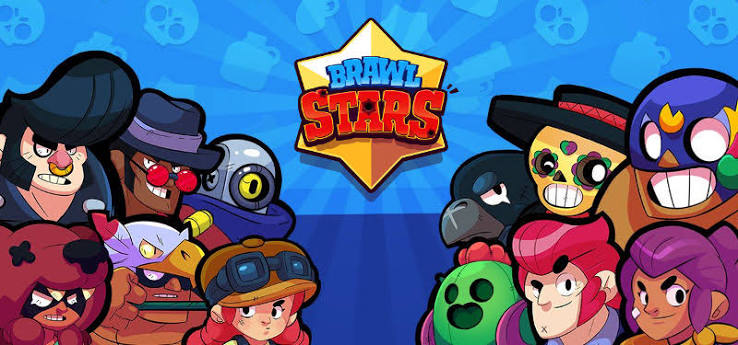
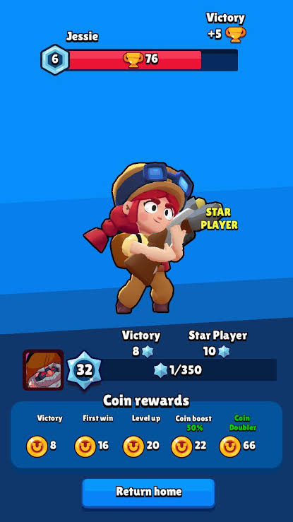
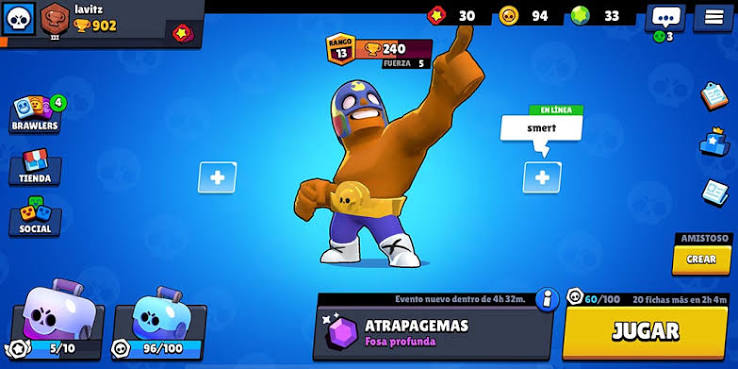
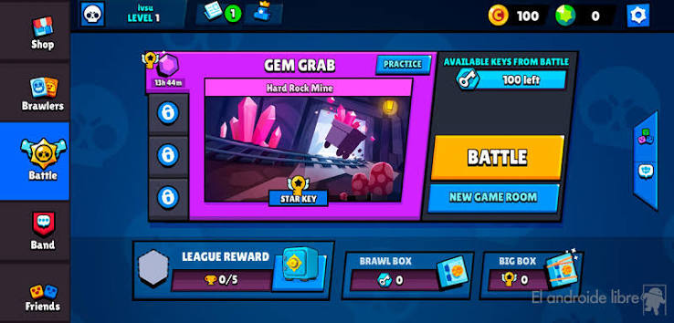
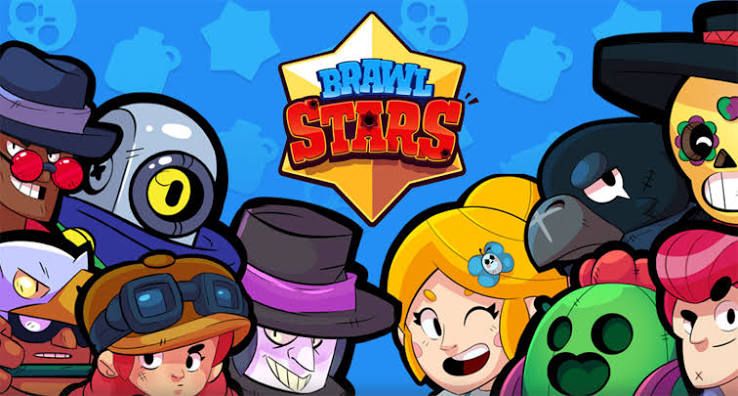
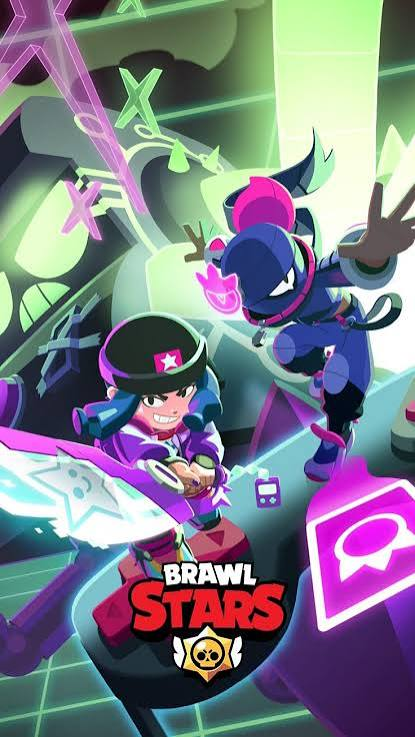
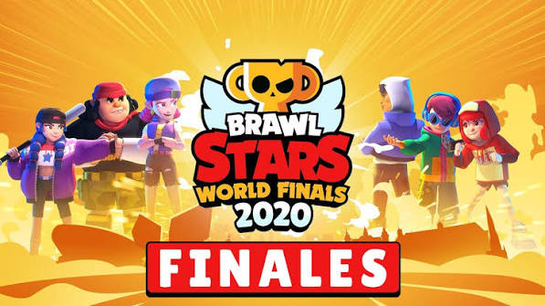
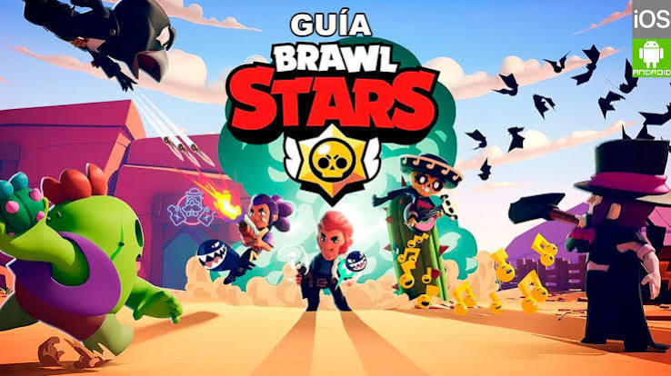
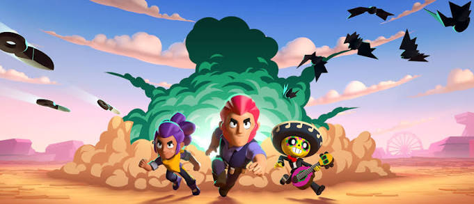

Brawl Stars es un videojuego de acción, disparos y estrategia multijugador en línea en tercera persona, desarrollado y publicado por la compañía finlandesa Supercell. Diseñado principalmente para dispositivos móviles (iOS y Android), el juego ha logrado consolidarse como uno de los mayores éxitos de la industria de los videojuegos móviles gracias a su ritmo frenético, sus coloridos personajes conocidos como "Brawlers" y un modelo de juego como servicio constantemente actualizado. A continuación se detalla en profundidad la historia completa de su origen, su caótico proceso de desarrollo y la transformación que experimentó a lo largo de los años.
A mediados de la década de 2010, Supercell ya era un gigante de la industria gracias a títulos masivos como Clash of Clans, Hay Day y Boom Beach. Sin embargo, el equipo de desarrollo de la empresa buscaba incursionar en un género que aún no había sido dominado con éxito en el ecosistema móvil: los juegos de acción multijugador competitivos en tiempo real, inspirados en gran medida por los MOBA (Multiplayer Online Battle Arena) de PC y los videojuegos de disparos tácticos.
El proyecto comenzó a gestarse bajo el nombre en clave "Project Laser".
En sus primeras fases de prototipado, el juego tenía una temática de ciencia ficción espacial y estética futurista. Los personajes eran astronautas y alienígenas que se enfrentaban en mapas galácticos. No obstante, el equipo sintió que la temática espacial era demasiado fría y común, lo que dificultaba que los jugadores conectaran emocionalmente con los personajes.
Buscando una atmósfera más cálida, el concepto se transformó en "Slugfest", un juego ambientado en el Salvaje Oeste.
Fue en esta etapa donde nacieron los primeros cimientos del universo actual del juego, con personajes icónicos como Colt, Shelly y El Primo, operando bajo un estilo de dibujo animado pero con toques de forajidos y desierto. Finalmente, para permitir que el universo se expandiera de forma ilimitada sin las restricciones históricas o estéticas de un wéstern tradicional, el juego pasó a llamarse de forma definitiva Brawl Stars, un entorno de fantasía y parque de atracciones donde cualquier concepto de personaje era posible.


.
El 15 de junio de 2017, Supercell lanzó Brawl Stars en fase de lanzamiento suave (soft launch) de forma exclusiva para dispositivos iOS en Canadá. Esta fase de prueba canadiense es recordada por los jugadores veteranos como una época de experimentación radical y una de las más críticas en la historia del juego.
En su lanzamiento original, Brawl Stars se jugaba estrictamente en formato vertical (modo retrato). El movimiento del personaje se realizaba mediante toques en la pantalla (tap-to-move) o con un joystick virtual básico, y el ataque requería deslizar el dedo hacia los objetivos. El sistema de progresión inicial se basaba en fichas y un sistema de elixir para mejorar las estadísticas de los brawlers, un formato muy similar al de Clash Royale.
Durante más de un año en beta, el juego sufrió cambios drásticos que polarizaron a la comunidad:
El paso al formato horizontal: En marzo de 2018, Supercell tomó la arriesgada decisión de cambiar el juego por completo al modo horizontal (landscape) e implementar un sistema de doble joystick virtual (uno para moverse y otro para apuntar/disparar). La comunidad inicial protestó masivamente, argumentando que el juego perdía su esencia casual para una sola mano.
La amenaza de la cancelación: Supercell es famosa en la industria por su política implacable de cancelar proyectos en fase beta si no cumplen con las métricas de retención de jugadores a largo plazo. Durante gran parte de 2018, el destino de Brawl Stars estuvo en la cuerda floja. Los desarrolladores eliminaron todas las publicaciones de sus redes sociales en noviembre de 2018, lo que hizo que la comunidad temiera la muerte inminente del juego.
Para sorpresa de todos, el "apagón" en redes fue una estrategia de mercadotecnia para anunciar que el juego había superado las expectativas internas tras las últimas reformas.




El 12 de diciembre de 2018, Brawl Stars se lanzó de forma global en todo el mundo. El éxito fue inmediato: el juego acumuló millones de descargas en sus primeros días y generó cientos de millones de dólares en su primer año, impulsado por modos de juego icónicos como Atrapagemas (Gem Grab), Balón Brawl (Brawl Ball), Supervivencia (Showdown) y Atraco (Heist).
Durante este periodo, la evolución del juego se centró en expandir el elenco de personajes e introducir rarezas (Especiales, Superespeciales, Épicos, Míticos y Legendarios). En mayo de 2020, el juego experimentó uno de sus cambios estructurales más importantes: la introducción del Brawl Pass (Pase de Batalla) junto con una nueva rareza de personajes llamados "Cromáticos". Este sistema reemplazó la dependencia absoluta de las cajas de botín aleatorias para dar a los jugadores un camino de recompensas mucho más predecible y lineal.
Paralelamente, el lore (la historia oculta) del juego cobró un protagonismo inmenso. Supercell reveló que el universo de Brawl Stars se desarrollaba dentro de Starr Park, un parque de atracciones supuestamente feliz pero con un trasfondo oscuro, distópico y siniestro. Mediante campañas de realidad alternativa (ARG), transmisiones de radio web misteriosas y videos promocionales perturbadores, el juego construyó una base de fanáticos sumamente leal e intrigada por sus secretos.

.
A medida que el juego envejecía, Supercell se enfrentó al desafío de mantener fresca la jugabilidad y la economía para los usuarios veteranos sin alienar a los nuevos. Esto dio pie a una serie de reestructuraciones profundas a partir de 2021:
1. Ligas de Clubes y Competitividad: Se introdujeron las guerras de clubes y la Liga Estelar (posteriormente transformada en el modo Competitivo), dándole un enfoque mucho más estratégico e impulsando fuertemente el ecosistema de los deportes electrónicos (esports) a través de las Brawl Stars World Finals.
2. La Eliminación de las Cajas Megas y Cajas Brawl (2022): En una de las actualizaciones más audaces del mercado móvil, Supercell eliminó por completo el factor de azar de las cajas de botín (loot boxes). Fueron sustituidas por el Camino Starr y los Créditos, permitiendo a los jugadores elegir y desbloquear directamente al Brawler que quisieran.
3. Introducción de las Hipercargas (2023): Para revitalizar el meta y la jugabilidad en los niveles más altos, se añadieron las Hipercargas, una mecánica de juego temporal que potencia las estadísticas de un brawler y modifica su habilidad Súper de forma destructiva durante unos segundos en la partida.
4. Inclusión de los Premios Starr: Respondiendo a la nostalgia de la comunidad que extrañaba la emoción de abrir recompensas aleatorias, se implementaron los Premios Starr, un sistema equilibrado de cajas de recompensas que no interfiere negativamente con la progresión directa.
Hoy en día, Brawl Stars cuenta con un ecosistema de decenas de Brawlers únicos, cada uno con sus propios Gadgets, Habilidades Estelares y cosméticos exclusivos. Ha evolucionado de ser un simple prototipo espacial en vertical a convertirse en un fenómeno cultural global de los videojuegos móviles, caracterizado por su capacidad de mutar y escuchar las demandas de su comunidad.

.
